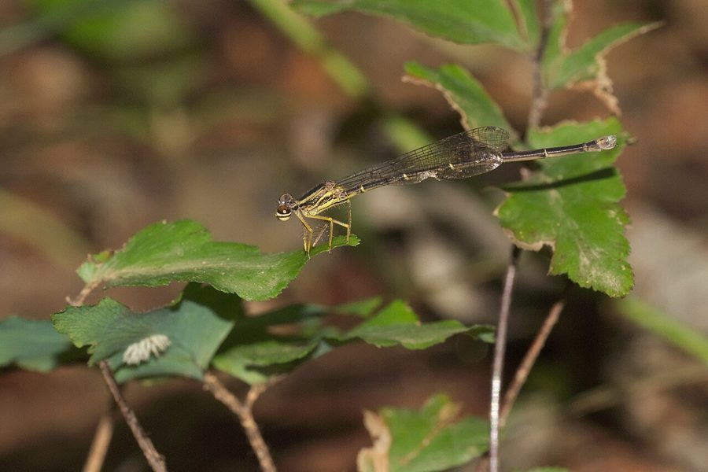

येलो बुश डार्ट व्याध पतंगYellow Bush Dart
Copera marginipes · Platycnemididae · INS-0213

- Scientific name वैज्ञानिक नाम
- Copera marginipes (Rambur, 1842)
- Family कुल
- Platycnemididae
- Hindi हिंदी
- येलो बुश डार्ट व्याध पतंग
- Local names स्थानीय नाम
- yellow bush dart, yellow bush dart damselfly, bush dart, peeli bush dart
- Status here यहाँ की स्थिति
- native
- Movement आवागमन
- Resident, here all year
- Known from कहाँ दर्ज
- Others have published records from the wider Awadh–Purvanchal plain, none yet from Basti–Ayodhya अवध–पूर्वांचल से दूसरों के प्रकाशित अभिलेख, बस्ती–अयोध्या से अभी नहीं
- IUCN IUCN
- not evaluated
- Review समीक्षा
- not yet reviewed
When to look कब देखें
Present all year. साल भर मौजूद।
Uses and possibilities उपयोग और संभावनाएँ
Drawn from the documented uses in the profile below, where each is labelled traditional, current or a research lead. All uses →
Tell it apart from इनसे अलग पहचानें
येलो बुश डार्ट व्याध पतंग / Yellow Bush Dart
Copera marginipes (Rambur, 1842) — Platycnemididae
येलो बुश डार्ट व्याध पतंग — घने बगीचों, बांस की झुरमुटों और छायादार नहरों के किनारे पाई जाने वाली एक अत्यंत पतली और अनोखी डैमसेल्फ़्लाई है। इसके पिछले पैर चमकीले पीले या नारंगी रंग के होते हैं जो थोड़े चौड़े और चपटे होते हैं। इसका शरीर गहरा भूरा और काला होता है और पूँछ के अंतिम भाग पर सफेद निशान होते हैं। यह सीधी धूप से बचती है और नम झाड़ियों की गहरी छाया में धीरे-धीरे उड़ती है।
Quick Identification त्वरित पहचान
| Feature | Description |
|---|---|
| Size | Small, extremely slender damselfly; abdomen 28–31 mm, hindwing 16–18 mm (Subramanian 2005) |
| Legs | Mid and hind tibiae broadly dilated, flattened, and bright yellow to orange (Fraser 1933) |
| Thorax | Bronzy-black dorsally with narrow pale greenish-yellow antehumeral stripes (Subramanian 2005) |
| Abdomen | Thread-like; dark bronzy-brown above, with segments 9 and 10 chalky white or pale yellow (Fraser 1933) |
| Eyes | Black above with a prominent horizontal greenish-white equatorial band (Subramanian 2005) |
| Female Colour | Pale brownish-yellow; legs less broadly dilated but distinctly yellow (Fraser 1933) |
| Habitat Habit | Strictly sciaphilic (shade-loving); perches low within dense undergrowth near water |
Field tip: Look in deep shade beneath bamboo clumps, banana groves, and overgrown canal embankments. A paper-thin damselfly with a dark brown body and bright, conspicuous golden-yellow legs fluttering weakly from leaf to leaf in dark undergrowth is the Yellow Bush Dart.
हिंदी: बांस की झुरमुटों और पेड़ों की गहरी छाया में उड़ने वाली इस पतली डैमसेल्फ़्लाई के पैर चमकीले पीले रंग के होते हैं, जिससे यह अंधेरे में भी साफ पहचानी जाती है।
Morphology आकारिकी
Measurements as given in the handbooks (Subramanian 2005; Fraser 1933):
| Measurement | Range | Source |
|---|---|---|
| Abdomen length | 28–31 mm | Subramanian (2005) |
| Hindwing length | 16–18 mm | Subramanian (2005) |
Adult description:
Copera marginipes is an exceptionally slender, elongate platycnemidid damselfly displaying specialized leg morphology (Fraser 1933). The head has a velvety black vertex crossed by a pale yellow transverse stripe between the compound eyes; the eyes are blackish-brown above, crossed by a pale greenish-white equatorial belt, and pale greenish-white below (Subramanian 2005). The synthorax is bronzy-black on the dorsum, bisected by fine greenish-yellow antehumeral stripes; the lateral pleura are pale yellow marked with two black suture stripes (Fraser 1933).
The legs are the most diagnostic feature: the middle and hind tibiae are remarkably expanded, flattened, and bright golden-yellow or deep orange, armed with long black spines along the margins (Fraser 1933). In mature males, these yellow legs stand out boldly against the dark body (Subramanian 2005).
The abdomen is extremely thin, cylindrical, and thread-like: segments 1 through 8 are dark bronzy-brown or blackish above, with pale yellow basal rings; segments 9 and 10 are completely chalky white or creamy yellow above, contrasting sharply with the dark anterior abdomen (Subramanian 2005). The anal appendages are small, white, and curved inward (Fraser 1933).
Females are slightly stouter and more brownish in general coloration, with their tibiae less broadly expanded but distinctly pale yellow (Fraser 1933). In both sexes, the wings are narrow, petiolate, and completely transparent, with small, brownish-black pterostigmata (Subramanian 2005).
Larval Stage निम्फ अवस्था
The aquatic naiad is slender, pale translucent brown or greenish-grey, clinging to submerged dead leaves and roots in slow-flowing, shaded ditches. The caudal lamellae are broadly foliate, paddle-shaped, and rounded apically, adorned with distinctive dark marginal spots.
हिंदी: नर का पेट 28 से 31 मिमी लंबा और धागे जैसा पतला होता है। इसके पैर चौड़े और चमकीले पीले होते हैं और पूँछ का अंतिम भाग सफेद होता है। मादा हल्के भूरे रंग की होती है।
Behaviour & Ecology व्यवहार और पारिस्थितिकी
The Yellow Bush Dart is an obligate shade-dwelling (sciaphilic) damselfly (Subramanian 2005). It shuns open sunny wetlands, living strictly within dense, humid microhabitats—such as shaded bamboo thickets, overgrown canal banks, damp ravines, and rural orchards bordering slow watercourses (Fraser 1933). Its flight is low, slow, and delicate, flitting through dark leafy thickets rarely rising more than thirty centimetres above the forest floor.
Adults perch horizontally on low broad leaves of herbs, ginger, or banana plants, splaying their bright yellow legs prominently outward (Subramanian 2005). Males maintain small perching territories on shaded leaves, fluttering their white abdominal tips and displaying their colourful legs when rival males approach (Fraser 1933). Mating takes place on shaded vegetation. Oviposition is endophytic: the female, accompanied by the male in tandem, drills into decaying waterlogged leaf stalks or submerged roots along shaded ditch margins to deposit clutches of eggs.
हिंदी: यह पतंग तेज धूप से बहुत दूर रहती है और हमेशा नम, ठंडी और छायादार झाड़ियों में ही उड़ती है। नर पत्तियों पर बैठकर अपने पीले पैरों और सफेद पूँछ को हिलाकर अपने क्षेत्र की रखवाली करता है।
Life Cycle / Phenology जीवन चक्र
Seasonal phenology in northern Indian alluvial wetlands across the agricultural year (Fraser 1933; Subramanian 2005):
| Season / Month | Stage | Field Observation |
|---|---|---|
| July–September (Kharif monsoon) | Adult emergence & breeding | Peak population; abundant in shaded bamboo groves near water (Subramanian 2005) |
| October–November (Post-monsoon) | High adult activity | Adults frequenting damp orchard undergrowth and canal banks |
| December–January (Rabi winter) | Naiad development | Aquatic nymphs feed slowly among submerged leaf detritus |
| February–April (Spring / Zaid) | Adult emergence | Spring brood active in shaded ravines and tube-well seepage (Fraser 1933) |
| May–June (Pre-monsoon summer) | Drought refuge | Persists strictly in deep, moist, shaded grove depressions (Subramanian 2005) |
Females use their ovipositor to insert elongate eggs into decaying, waterlogged plant tissues and submerged leaf stalks in shaded ditches. The eggs hatch after a few days into tiny aquatic nymphs. Naiads develop over several weeks through multiple instars, feeding on detritivorous microinvertebrates in quiet, shaded water. At maturity, the nymph crawls onto an emergent leaf stem at dawn to shed its skin and emerge as an adult damselfly.
हिंदी: मादा पानी में सड़ी हुई पत्तियों में अंडे देती है। कुछ दिनों में अंडे फूटते हैं और पानी में रहने वाला निम्फ कुछ ही हफ्तों में बड़ा होकर पत्ती पर चढ़कर पतंग बन जाता है।
Host Plants or Prey आहार
Copera marginipes is an obligate predatory carnivore of shade-dwelling insects (Subramanian 2005):
Adult diet:
- Small dipteran flies sheltering in shady thickets, including fungus gnats, drain flies (Clogmia albipunctatus Drain Fly), and midges (Chironomidae).
- Shade-tolerant mosquitoes resting in vegetation, including Culex quinquefasciatus (Southern House Mosquito) and Aedes aegypti (Yellow Fever Mosquito).
- Small leafhoppers and micro-moths active within dense grove understories.
Larval diet:
- Mosquito wrigglers, midge larvae, small aquatic isopods, and oligochaetes in leaf-choked ditches.
हिंदी: यह पतंग घने अंधेरे में छिपने वाले मच्छरों, नालियों की मक्खियों और छोटे कीड़ों का शिकार करती है। इसका निम्फ पानी में रहने वाले मच्छरों के लार्वा को खाता है।
Predators / Natural Enemies शत्रु
Natural predators documented in Gangetic plain shaded ecosystems:
- Spiders: Large wandering spiders (Ctenidae) and sheet-web weavers ambush adults resting on low orchard foliage.
- Predatory insects: Robber flies and larger damselflies attack bush darts in shaded undergrowth.
- Amphibians: Small tree frogs (Polypedates maculatus Indian Tree Frog) catch adults perched on damp leaves.
- Lizards: Calotes lizards hunt adults along bamboo culms and orchard trunks.
हिंदी: झाड़ियों में रहने वाली शिकारी मकड़ियाँ, पेड़ के मेंढक और गिरगिट इस छायादार पतंग को पकड़कर खाते हैं।
Agricultural / Human Relevance कृषि प्रासंगिकता
Natural suppression of shade-dwelling mosquitoes: The Yellow Bush Dart performs an important ecological service around rural human habitations (Subramanian 2005). Because it hunts inside the exact shaded microhabitats where vector mosquitoes like Aedes aegypti (Yellow Fever Mosquito) and Culex quinquefasciatus (Southern House Mosquito) rest during the day—such as bamboo thickets, village orchards, and ditch banks—it preys heavily on diurnal resting disease vectors.
Orchard ecosystem indicator: Its presence signifies the maintenance of healthy, layered orchard undergrowth and unpolluted shaded seepage waters (Subramanian 2005).
Traditional: No traditional medicinal, economic, or cultural uses are recorded.
Today: Valued by naturalists for its delicate beauty and extraordinary yellow tibial morphology.
Research direction (a lead, not a result): Assessing the microclimatic relative humidity thresholds required for Copera adult survival during extreme pre-monsoon heat waves.
हिंदी: यह पतंग गाँव के बगीचों और बांस की झुरमुटों में आराम करने वाले डेंगू और जापानी बुखार के मच्छरों को खाकर ग्रामीणों की सुरक्षा करती है।
Expected Locally स्थानीय रूप से अपेक्षित
Not a field record. Written from published accounts for eastern Uttar Pradesh. No confirmed local sighting yet — if you have seen it, that is what the atlas needs.
अभी तक स्थानीय पुष्टि नहीं। यह विवरण प्रकाशित स्रोतों से है, किसी अवलोकन से नहीं।
The Yellow Bush Dart is expected across eastern Uttar Pradesh in shaded bamboo thickets, overgrown canal banks, and dense rural orchards near perennial ditches. Look low on broad leaves in deep shade during calm mornings from July through November. GBIF holds published records from the wider Awadh–Purvanchal plain, none yet from Basti–Ayodhya. A photograph showing the thread-like dark body, yellow legs, and white tail, submitted through the About page, would confirm the first local documentation for the district.
Distribution वितरण
Global range: Widespread across South and Southeast Asia, occurring from India and Sri Lanka through Nepal, Bangladesh, Myanmar, Thailand, Indochina, southern China, Malaysia, and Indonesia (Fraser 1933).
In India: Recorded throughout peninsular India, the Western and Eastern Ghats, central India, and across the Gangetic plain to Assam and the Andaman Islands (Prasad & Varshney 1995; Mitra 2002).
In Uttar Pradesh: Recorded from shaded stream valleys, canal corridors, and rural orchard tracts throughout central and eastern districts.
In Basti district / eastern UP: Expected as a resident breeding species in shaded village groves, bamboo clumps, and perennial canal margins.
हिंदी: यह भारत और पूरे दक्षिण-पूर्व एशिया में पाई जाती है। उत्तर प्रदेश के छायादार बगीचों, बांस के जंगलों और नहरों के किनारे यह सामान्य रूप से मौजूद है।
Research Questions शोध प्रश्न
- How does the removal of bamboo grove undergrowth and leaf litter affect local Copera marginipes population density? / बांस के नीचे की घास साफ करने से इस पतंग पर क्या असर पड़ता है?
- What is the daily predation rate of Copera marginipes on resting Aedes aegypti mosquitoes in rural orchards?
- What is the functional role of the broadly dilated yellow tibiae in intra-sexual male territorial displays? / नर के चौड़े पीले पैर इलाके की रखवाली में क्या भूमिका निभाते हैं?
- How do summer heat waves with relative humidity below 30% affect adult survival in grove microrefugia?
- Can local village nature groups document Copera breeding in shaded irrigation ditches near settlements?
Similar Species मिलती-जुलती प्रजातियाँ
| Species | How to tell apart | हिंदी | |
|---|---|---|---|
| Ceriagrion coromandelianum ([[coromandel_marsh_dart\ | Coromandel Marsh Dart]]) | Entire body uniform bright citron-yellow; legs simple, not dilated; sun-loving, flies over open ponds | कोरोमंडल मार्श डार्ट — पूरी पीली पतंग |
| Pseudagrion spencei ([[spences_dartlet\ | Spence's Dartlet]]) | Slender blue-and-black body; legs black and simple; sun-loving lotic damselfly | स्पेंसेज डार्टलेट — नीली पतंग |
| Libellago lineata ([[river_heliodor\ | River Heliodor]]) | Stouter body; abdomen bright yellow and black; male has white expanded legs and black-tipped forewings | रिवर हेलियोडोर — सफेद पैरों वाली पतंग |
Field rule: An extremely slender, thread-like damselfly flitting weakly in deep shade near water with a dark bronzy body, a white tail tip, and conspicuously expanded bright golden-yellow legs is the Yellow Bush Dart.
हिंदी: रिवर हेलियोडोर के पैर सफेद होते हैं और कोरोमंडल मार्श डार्ट पूरी पीली होती है, जबकि केवल येलो बुश डार्ट के पैर चौड़े और चमकीले पीले होते हैं और यह गहरी छाया में रहती है।
Taxonomy & Classification वर्गीकरण
Original description. Described by Jules Pierre Rambur in 1842 as Platycnemis marginipes in Histoire naturelle des insectes. Névroptères, page 240. Type locality: "Java" (Indonesia).
Subspecies. Monotypic — no subspecies are currently recognized across its broad Indo-Malayan range.
Family and order placement. Order Odonata, suborder Zygoptera, family Platycnemididae. The genus Copera Kirby, 1890, comprises the bush darts or featherlegs, characterized by dilated male tibiae and shade-dwelling habits.
Phylogenetic notes. Copera marginipes is closely related to C. vittata, separated by its completely yellow middle and hind tibiae and distinct white coloration on abdominal segments 9 and 10 (Subramanian 2005).
IUCN status rationale. Not evaluated (NE) on the global IUCN Red List of Threatened Species. It is an abundant and secure native species across South and Southeast Asian shaded freshwater ecosystems.
हिंदी: इसका वैज्ञानिक नाम Copera marginipes है और यह Platycnemididae परिवार की सदस्य है। प्रकृति में इसका अस्तित्व पूरी तरह सुरक्षित है।
Photo Gallery फोटो गैलरी
No photos yet — add field photos to media/species/yellow_bush_dart/ and run node scripts/sync_photos.js.
Photos needed आवश्यक फोटो
- [ ] Adult male perched on shaded leaf showing bright yellow dilated legs (पीले पैरों वाला नर पत्ती पर)
- [ ] Close-up of white terminal abdominal segments (सफेद पूँछ की क्लोज-अप तस्वीर)
- [ ] Adult female showing pale brownish ground colour (मादा की शारीरिक बनावट)
- [ ] Tandem mating pair in shaded bamboo understory (बांस की छाया में प्रजनन करती जोड़ी)
References संदर्भ
- Rambur, M. P. (1842). Histoire naturelle des insectes. Névroptères. Librairie encyclopédique de Roret, Paris, p. 240.
- Fraser, F. C. (1933). The Fauna of British India, Including Ceylon and Burma. Odonata, Vol. 1. Taylor and Francis, London, pp. 192–197.
- Subramanian, K. A. (2005). Dragonflies and Damselflies of Peninsular India — A Field Guide. E-book of Project Lifescape, Centre for Ecological Sciences, Indian Institute of Science and Indian Academy of Sciences, Bangalore, p. 75.
- Prasad, M. & Varshney, R. K. (1995). A check-list of the Odonata of India including data on larval studies. Oriental Insects, 29(1): 385–428.
- Mitra, T. R. (2002). Geographical distribution of Odonata (Insecta) of Eastern India. Memoirs of the Zoological Survey of India, 19(1): 1–208.
- GBIF Occurrence Data — Copera marginipes, India (2025).
Source file: species/fauna/insects/yellow_bush_dart.md